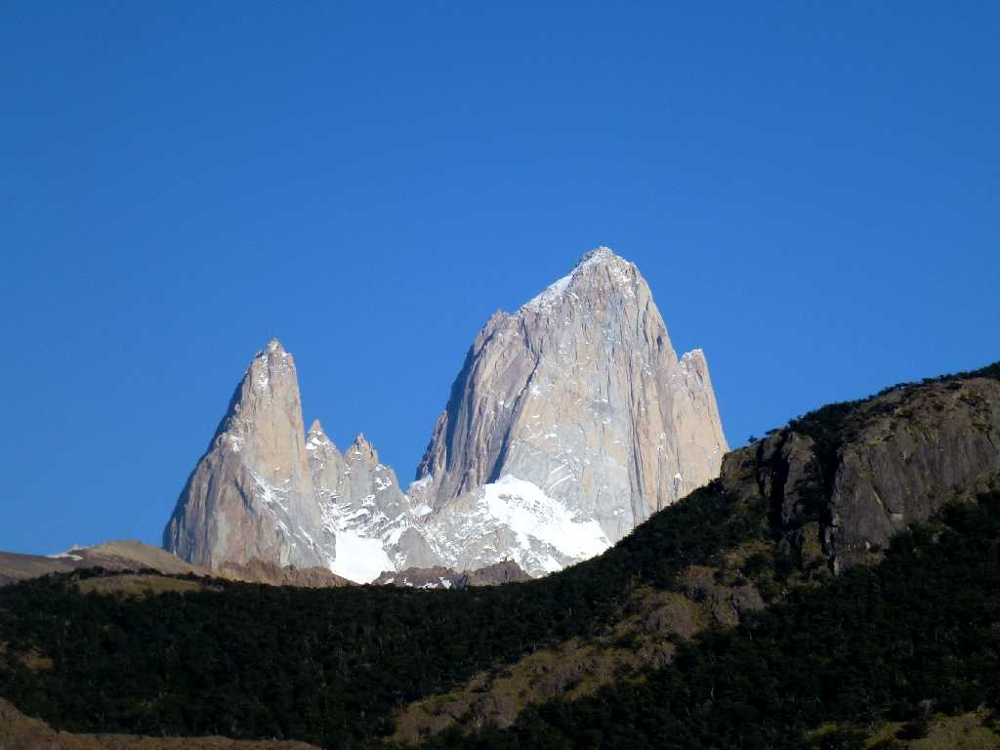
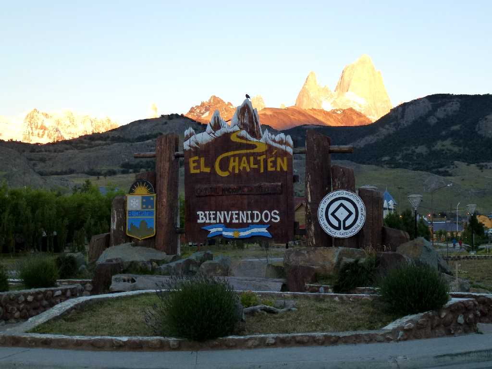
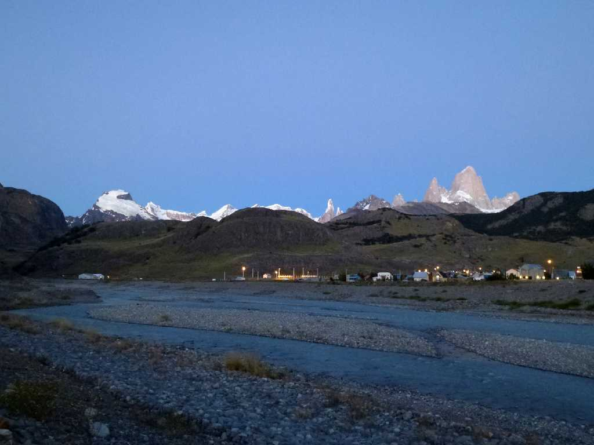
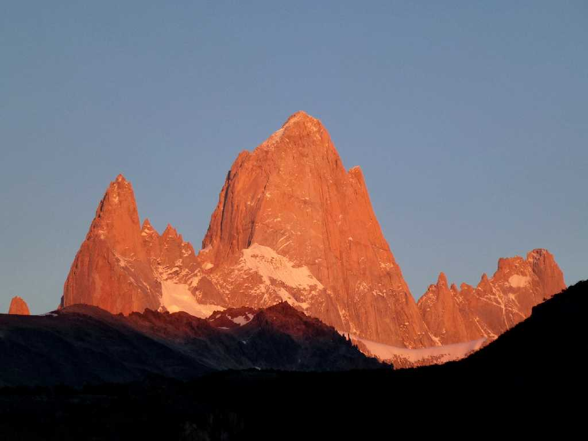
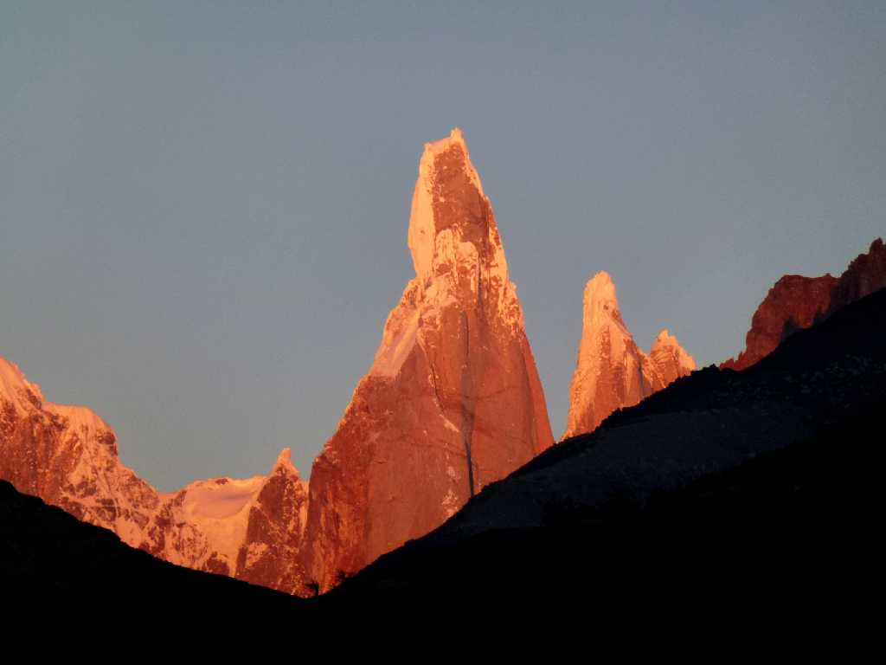

Cerro Fitz Roy 3,375m Chalten
フィッツロイの登山拠点チャルテンの街から美しいフィッツロイを望む

Entrance Chalten
フィッツロイを先住民は煙を吐く山(チャルテン)と呼んでいたのは雲が煙りを吐いているように見え何時までも消えないことが多いからのようだ

February 14 2014 6:32 Early Morning Cerro Torre Cerro Fitz Roy Chalten
n
February 14 2014 7:01 Sunrise Cerro Torre 3,102m Cerro Fitz Roy 3,375m Chalten

Sunrise Cerro Fitz Roy 3,375m Chalten
朝日に輝くフィッツロイ

Sunrise Cerro Torre 3,102m Chalten